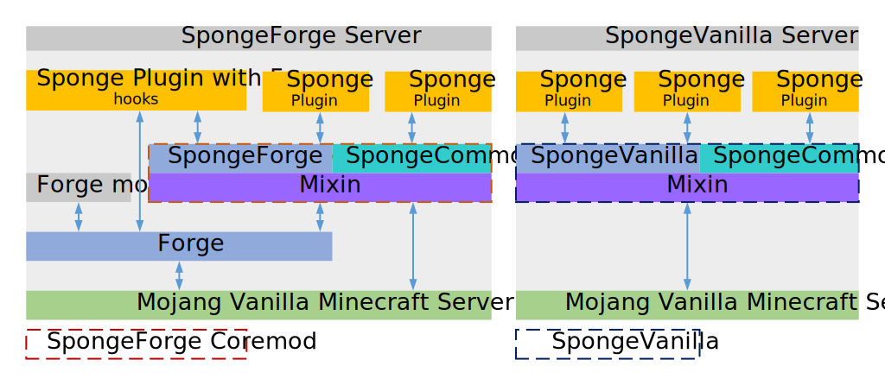

Sponge 專案的結構¶
Sponge 專案包含不同的子專案，託管在 GitHub 上的各種儲存庫中。 在深入細節前這裡有一段簡介：
| 專案 | 說明 | 這個儲存庫完成了哪些事？ |
|---|---|---|
| SpongeAPI | API 本身 | API 本身的開發 |
| SpongeForge | 基於 Forge 開發的一項 SpongeAPI 實作 | 開發 SpongeForge 依賴 Forge 的部分 |
| SpongeVanilla | 直接在原版 Minecraft 上開發的 SpongeAPI 實作 | 由 SpongeForge 儲存庫開發出原版對應部分 |
| SpongeCommon | SpongeForge 與 SpongeVanilla 之間共用的程式碼 | 開發 SpongeForge 和 SpongeVanilla 共用的所有程式碼 |
| Mixin | 用於將實作注入底層程式碼結構的工具 | 開發將 Sponge 掛進 Minecraft 伺服器的解決方案 |
| SpongeDocs | Sponge 專案的官方文件 | 擴展，修訂以及撰寫 SpongeDocs |
| SpongeHome | Sponge 專案的網站 | 開發我們的網站 |
| Ore | 插件託管的解決方案 | 開發我們的插件託管解決方案 |
| SpongeAuth | 我們網站的認證門戶與 SSO | 我們的認證門戶與 SSO 解決方案的開發 |
SpongeCommon、SpongeForge 以及 SpongeVanilla¶
SpongeCommon 儲存庫是 SpongeForge 和 SpongeVanilla 實作之間共享的所有程式碼的基礎。SpongeForge 和 SpongeVanilla 儲存庫中包含所有無法在它們之間共享的程式碼，如同 Forge 需要一些 Forge 特定的東西，這些東西也無法在 Vanilla 中使用，反之亦然。
當你提到 SpongeForge 實作時，基本上就是在討論包含在 SpongeCommon 和 SpongeForge 儲存庫中的所有內容。這同樣適用於 SpongeVanilla 和 SpongeCommon。這就是為什麼無法在不使用 SpongeCommon 的前提下僅用 SpongeForge 或 SpongeVanilla 的儲存庫進行建置。
SpongeHome¶
SpongeHome 是 Sponge 專案的網站。以 Golang 撰寫，使用 go-macaron 函式庫。它使用 SCSS 作為其 CSS 預處理器。
Ore¶
Ore 是我們自己的插件託管解決方案。以 Scala 編寫，基於 Play Framework 而且當然開源！
這一切如何相互配合¶
這張圖顯示了 Sponge 實作的各個部分，以及彼此的交互作用與依賴性。左側的是一個典型的 SpongeForge 結構，包含一些 SpongeAPI 插件，一個 Forge 模組以及一個同時使用 Forge（作為模組）與 Sponge（作為插件）的交互混和物。右側的是一個典型的 SpongeVanilla 結構。你會注意到 SpongeVanilla 並不支援 Forge 模組或其混合物，因為 SpongeVanilla 缺乏 Forge 的功能：
